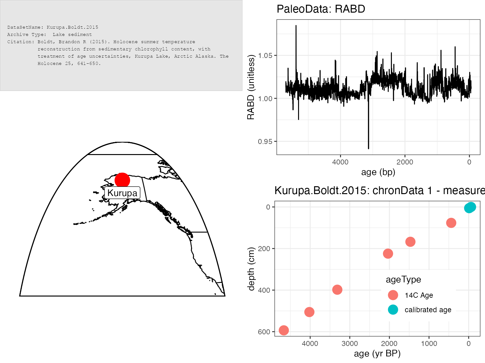
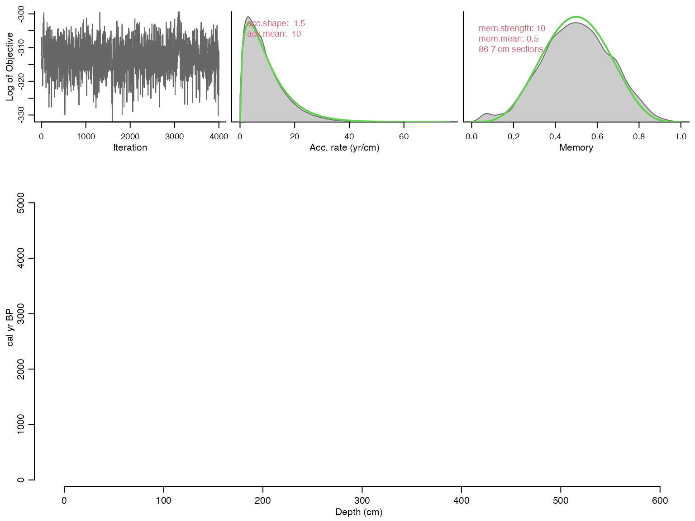
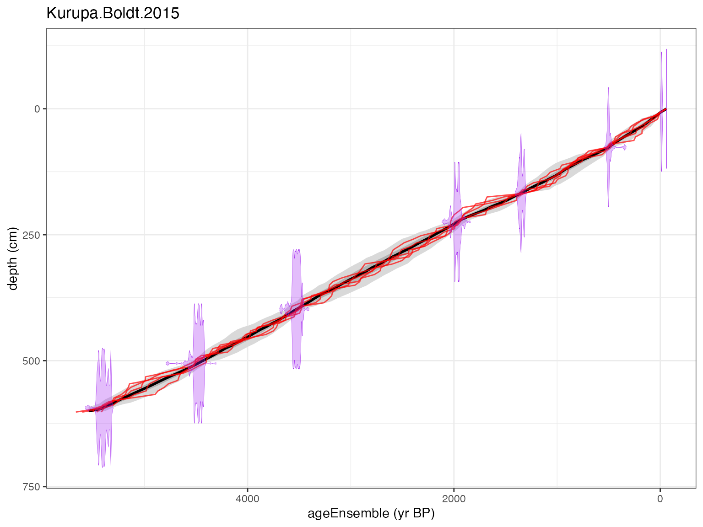
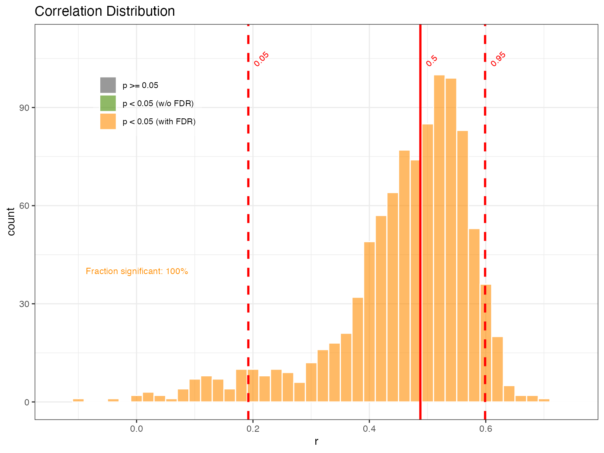
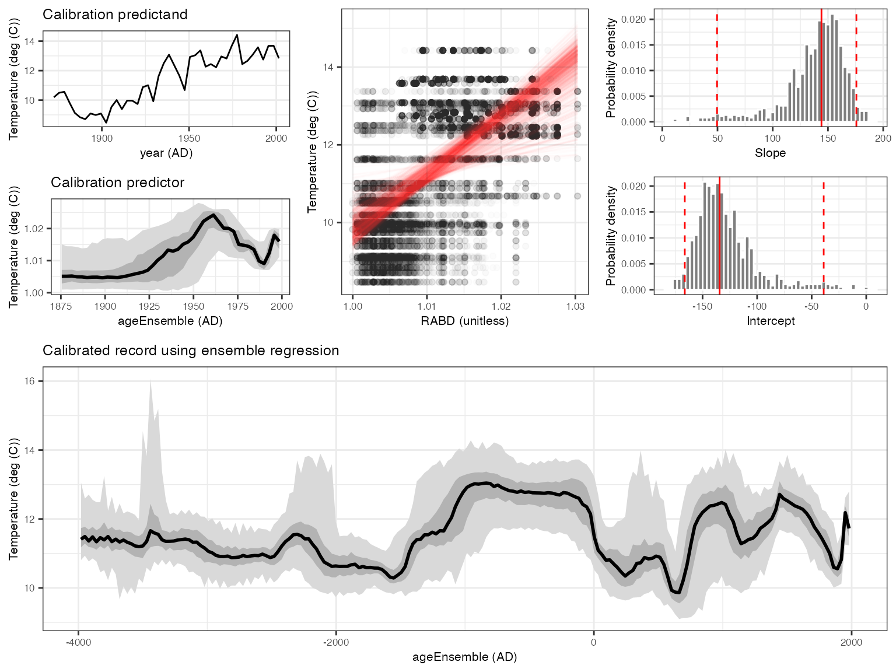

vignettes/regression.Rmd
regression.RmdHere, we replicate the analysis of Boldt et al. (2015), performing age-uncertain calibration-in-time on a chlorophyll reflectance record from northern Alaska, using geoChronR.
The challenge of age-uncertain calibration-in-time is that age uncertainty affects both the calibration model (the relation between the proxy data and instrumental data) and the reconstruction (the timing of events in the reconstruction). geoChronR simplifies handling these issues.
Let’s start by loading the packages we’ll need.
library(lipdR) #to read and write LiPD files
library(geoChronR) #of course
library(readr) #to load in the instrumental data we need
library(ggplot2) #for plottingOK, we’ll begin by loading in the Kurupa Lake record from Boldt et al., 2015. The system.file(...) part of this pulls the example file from the package directory. You’d like just enter the path as a string for typical use.
K <- lipdR::readLipd("http://lipdverse.org/geoChronR-examples/Kurupa.Boldt.2015.lpd")## [1] "reading: Kurupa.Boldt.2015.lpd"
sp <- plotSummary(K,paleo.data.var = "RABD",summary.font.size = 6)## [1] "Found it! Moving on..."
## [1] "Found it! Moving on..."
## [1] "Found it! Moving on..."
## [1] "Found it! Moving on..."
## [1] "Found it! Moving on..."
print(sp)## TableGrob (4 x 4) "arrange": 4 grobs
## z cells name grob
## 1 1 (1-1,1-2) arrange gTree[GRID.gTree.11]
## 2 2 (1-2,3-4) arrange gtable[layout]
## 3 3 (2-4,1-2) arrange gtable[layout]
## 4 4 (3-4,3-4) arrange gtable[layout]
K <- runBacon(K,
lab.id.var = 'labID',
age.14c.var = 'age14C',
age.14c.uncertainty.var = 'age14CUncertainty',
age.var = 'age',
age.uncertainty.var = 'ageUncertainty',
depth.var = 'depth',
reservoir.age.14c.var = NULL,
reservoir.age.14c.uncertainty.var = NULL,
rejected.ages.var = NULL,
bacon.acc.mean = 10,
bacon.thick = 7,
ask = FALSE,
bacon.dir = "~/Cores",
suggest = FALSE,
close.connection = FALSE)## Using a mix of cal BP and calibrated C-14 dates## Run Kurupa.Boldt.2015 with 86 sections? (Y/n)## Will run 17776000 iterations and store around 2019## Warning, this will take quite some time to calculate. I suggest increasing d.by to, e.g.10## Calculating age ranges...##
## Preparing ghost graph...##
## Mean 95% confidence ranges 319 yr, min. 4 yr at 0 cm, max. 525 yr at 315 cm## 100% of the dates overlap with the age-depth model (95% ranges)## 
plotChron(K,age.var = "ageEnsemble",dist.scale = 0.2)## [1] "Found it! Moving on..."
## [1] "Found it! Moving on..."
## [1] "plotting your chron ensemble. This make take a few seconds..."## Scale for 'x' is already present. Adding another scale for 'x', which will
## replace the existing scale.
This is to get ensemble age estimates for each depth in the paleoData measurement table
K <- mapAgeEnsembleToPaleoData(K,age.var = "ageEnsemble")## [1] "Kurupa.Boldt.2015"
## [1] "Looking for age ensemble...."
## [1] "Found it! Moving on..."
## [1] "Found it! Moving on..."
## [1] "getting depth from the paleodata table..."
## [1] "Found it! Moving on..."
## mapAgeEnsembleToPaleoData created new variable ageEnsemble in paleo 1 measurement table 1
## mapAgeEnsembleToPaleoData also created new variable ageMedian in paleo 1 measurement table 1
kae <- selectData(K,"ageEnsemble")## [1] "Found it! Moving on..."
rabd <- selectData(K,"RABD")## [1] "Found it! Moving on..."
kurupa.instrumental <- readr::read_csv("http://lipdverse.org/geoChronR-examples/KurupaInstrumental.csv")## Rows: 134 Columns: 2
## ── Column specification ────────────────────────────────────────────────────────
## Delimiter: ","
## dbl (2): Year (AD), JJAS Temperature (deg C)
##
## ℹ Use `spec()` to retrieve the full column specification for this data.
## ℹ Specify the column types or set `show_col_types = FALSE` to quiet this message.
kae$units## [1] "yr BP"yep, we need to convert the units from BP to AD
kae <- convertBP2AD(kae)Note that here we use the “Effective-N” significance option as we mimic the Boldt et al. (2015) paper.
plotCorEns(corout,significance.option = "eff-n")
Mixed results. But encouraging enough to move forward.
OK, you’ve convinced yourself that you want to use RABD to model temperature back through time. We can do this simply (perhaps naively) with regession, and lets do it with age uncertainty, both in the building of the model, and the reconstructing
regout <- regressEns(time.x = kae,
values.x = rabd,
time.y =kyear,
values.y =kinst,
bin.step=3,
gaussianize = FALSE,
recon.bin.vec = seq(-4010,2010,by=20))
regPlots <- plotRegressEns(regout,alp = 0.01,font.size = 8)
This result is consistent with that produced by Boldt et al., (2015), and was much simpler to produce with geoChronR.
In the next vignette learn about spectral analysis in geoChronR.
```